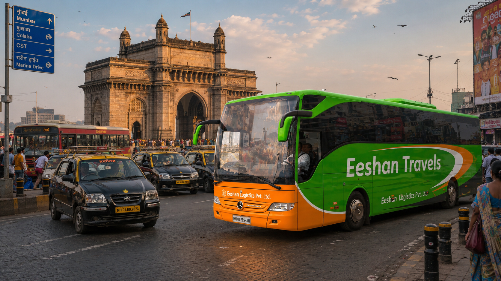
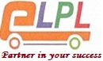
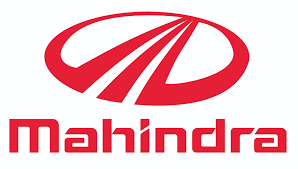
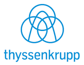
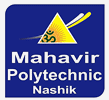
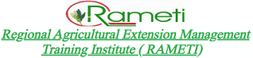
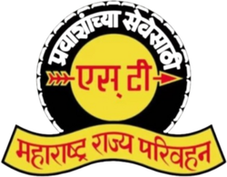
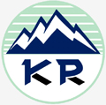
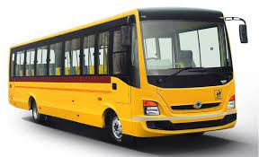
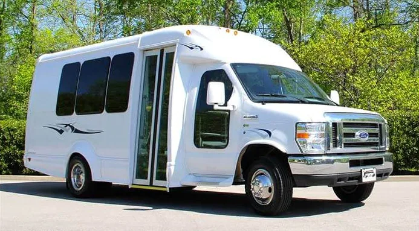

Corporate & institutional routes
Planned staff movement, pickup and drop routing, shift-wise service, supervisor coordination, and daily reporting discipline.


Eshan Logistics Pvt. Ltd.
Employee and student mobility with efficient route design, different shift operations, reliable supervision, tracking, compliance discipline, and a wide vehicle fleet.
Trusted by institutions and industry
ELPL's client and operating ecosystem is presented upfront so schools, institutions, and companies can evaluate capability before they reach the enquiry form.






Company profile
ELPL began from the Eeshan Group journey that started in 1996 with a single bus. In 2012, Eshan Logistics was established as an independent entity to serve industrial and institutional transport needs in the Nashik area.
The company focuses on safety, integrity, accountability, quality, respect, customer needs, and long-term relationships with clients, employees, and the community.
Specialized mobility solutions
Planned staff movement, pickup and drop routing, shift-wise service, supervisor coordination, and daily reporting discipline.

Secure student movement with verified staff, route discipline, tracking, alerts, emergency response, and parent confidence.
Bus, car, SUV, tempo traveller, luxury vehicle, and backup planning matched to passenger count, route, timing, and comfort needs.
Sectors we serve
Schools, colleges, student routes, attendants, secure pickup/drop, and punctual daily service.
Employee movement, shift routes, staff comfort, office pickups, and late-hour planning.
Industrial workforce movement with practical route design and supervisor-led operations.
Community-oriented movement and transport support backed by operating discipline.
For students, schools, and colleges
Tracking, alerts, route monitoring, and an emergency response team help institutions manage student movement with confidence.
Background checks, trained drivers, friendly attendants, ladies staff support where needed, and continuous training improve day-to-day safety.
Route plans, pickup points, timing controls, cleanliness checks, and daily coordination reduce disruption for parents and administrators.
For corporates and staff
Corporate transport needs precision: multiple shifts, late-hour pickup/drop, route changes, supervisor communication, and reliable vehicles. Eshan Logistics plans staff movement around business operations instead of forcing businesses into fixed rental templates.
Milestones of reliability
Fleet options


Safety is the first priority
Operating standards
Every daily route depends on small operational habits: vehicle readiness, staff discipline, reporting, backup planning, and route communication. ELPL keeps those controls visible to clients instead of treating transport as a black box.
Regular inspections, service planning, and readiness checks reduce avoidable downtime.
GPS support, route alerts, and supervisor updates improve visibility for institutions and corporates.
Background checks, continuous training, polite staff behavior, and emergency response planning.
Route design that balances punctuality, last-mile connectivity, comfort, and operating cost.
Plan transport
Use the enquiry form for school, college, institution, or corporate transport requirements.